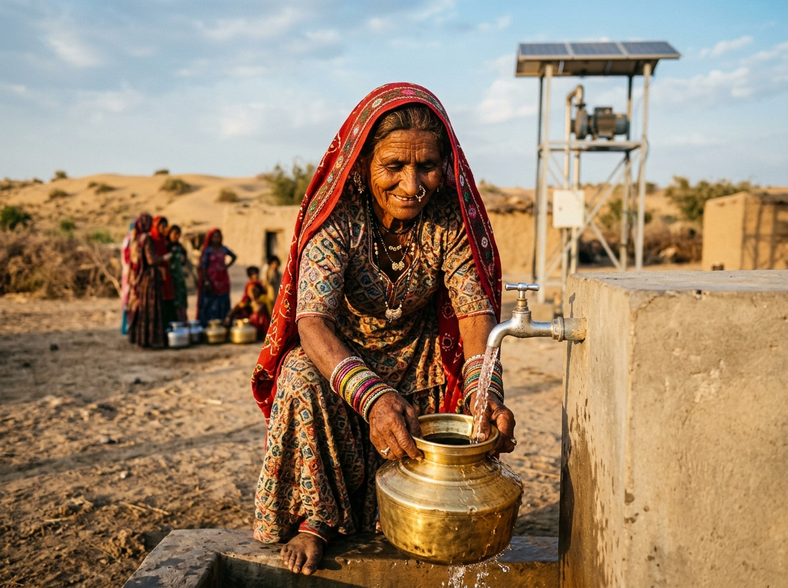
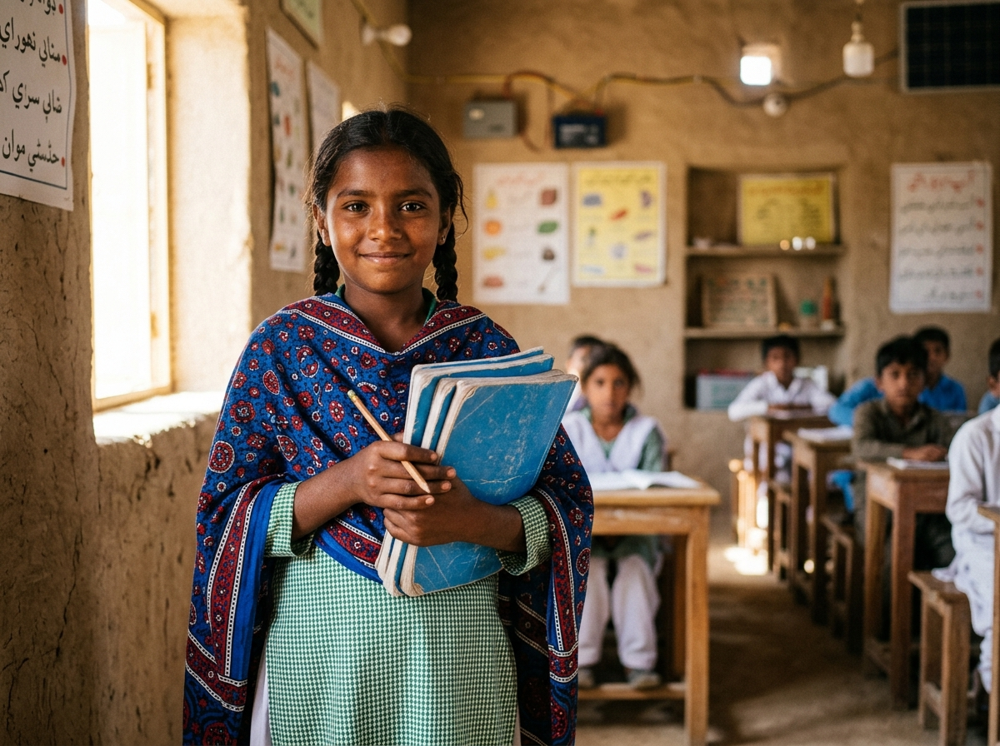
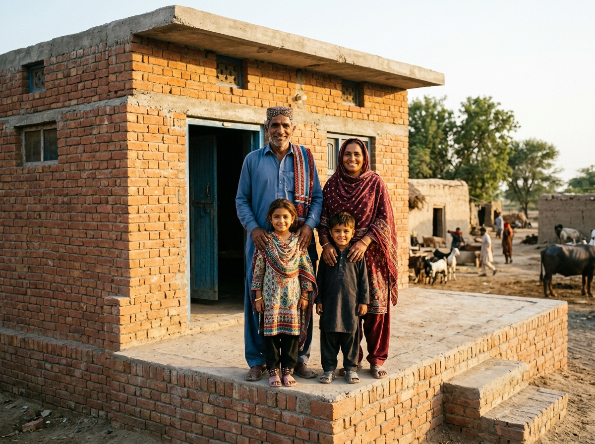
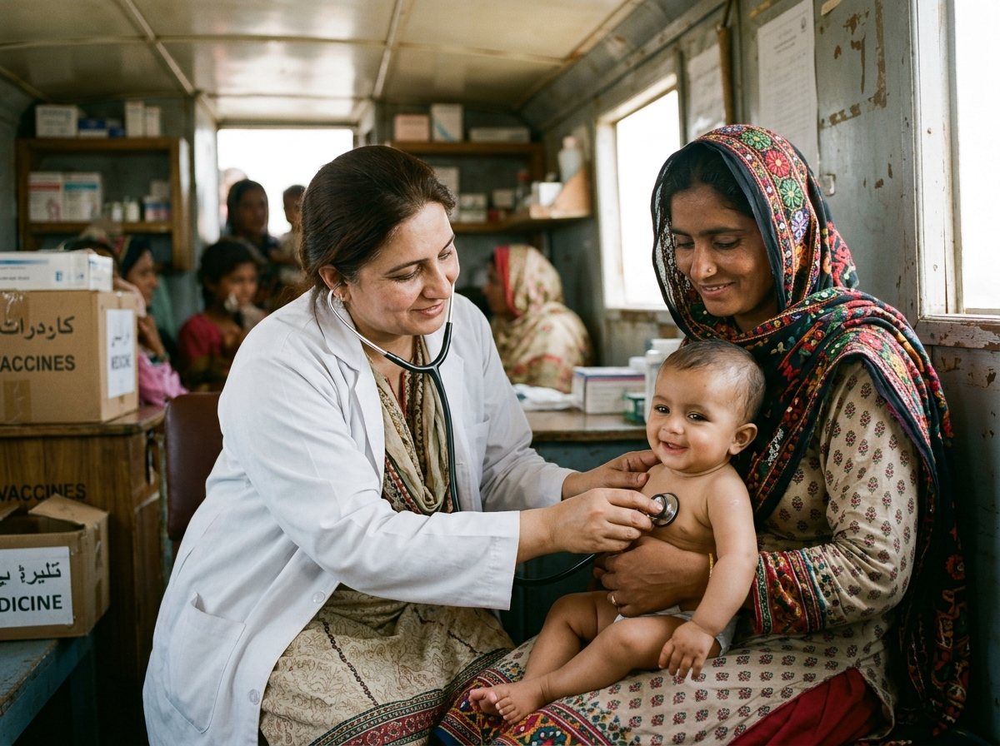

Dringende Hilfsprojekte in Sindh
Jedes Projekt wird vor Ort in enger Zusammenarbeit mit den lokalen Dorfkomitees geplant und umgesetzt, um langfristige Selbsthilfe und Nachhaltigkeit zu sichern.

Tharparkar Wasser 100% ZakatSolar-Tiefbrunnen & Trinkwasser-Anlagen in Thar
Bohrung von 80 Meter tiefen Solar-Tiefbrunnen zur Versorgung dürregeplagter Wüstendörfer mit sauberem, süssem Trinkwasser.

Bildung Zakat-BerechtigtMarvi Solar-Klassenzimmer & Mädchen-Bildungsfonds
Bildungschancen für junge Mädchen auf dem Land: Schuluniformen, Solarlampen, qualifizierte Lehrerinnen und warme Mahlzeiten.

Wiederaufbau Zakat-BerechtigtKlimaresistente, hochgelegte Backsteinhäuser am Indus
Bau von soliden 1-Zimmer-Häusern auf 1,2 Meter hohen Fundamenten zum dauerhaften Schutz vor wiederkehrenden Monsunfluten.

Gesundheit Zakat-BerechtigtMutter-Kind Klinikboote & mobile Delta-Versorgung
Ausgerüstete Klinikboote erreichen abgelegene Flussinseln zur pränatalen Vorsorge, Neugeborenen-Rettung und Impfung.
 Nothilfe & Rationen
100% Zakat
Nothilfe & Rationen
100% Zakat
Monsun-Nothilfe: Nahrungspakete & Trinkwasser-Kits
Monatspakete mit Mehl, Reis, Linsen, Speiseöl, Wasserentkeimungstabletten und Babynahrung für notleidende Familien in Notlagern.
 Existenzsicherung
Zakat-Berechtigt
Existenzsicherung
Zakat-Berechtigt
Frauen-Existenzsicherung: Ziegen- & Handwerksfonds
Übergabe von Milchziegen und traditionellen Rilli-Nähmaschinen an verwitwete Frauen zur selbstständigen Familienernährung.